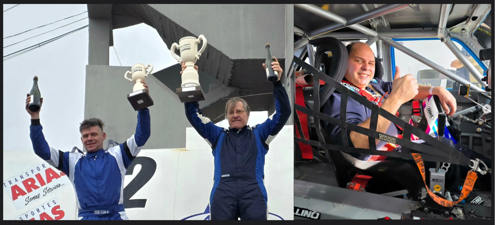

Larreguy se llevó una final con golpes de escena

La sexta fecha del Turismo Carretera Austral en el Autódromo General San Martín tuvo un condimento especial: 19 autos en pista, cifra que permitió recuperar el formato de dos series, algo que hacía mucho tiempo no se veía en la categoría.
En clasificación, el más rápido fue Miguel Otero, seguido por Javier Figueroa y Marcelo Pérez. Los diez mejores los completaron: Marcelo Otero (4º), Sergio Larreguy (5º), Fernando Vázquez (6º), Rubén Pires (7º), Emanuel García (8º), Javier Hernández (9º) y Martín Larreguy (10º).
Series
1ª Serie: triunfo de Miguel Otero, escoltado por Marcelo Pérez y Sergio Larreguy.
2ª Serie: victoria para Fernando Vázquez, seguido por Emanuel García y Javier Figueroa.
En la final, la sorpresa llegó temprano: Miguel Otero, que largaba desde la pole, sufrió la rotura de la parrilla superior y debió ingresar a boxes, completando la carrera con una vuelta menos. El triunfo quedó en manos de Sergio Larreguy, seguido por Marcelo Otero. En pista, Martín Larreguy había cruzado tercero, pero un recargo por toque a Javier Hernández lo relegó, permitiendo que Lola Enrrico heredara el último escalón del podio. El momento más impactante se vivió con el accidente de Rubén Pires, quien en el ingreso a la recta principal pisó la tierra y se fue directo contra el paredón. El rápido accionar de personal de pista, bomberos, auxiliares y ambulancia permitió asistirlo de inmediato. Afortunadamente, el piloto no sufrió lesiones, aunque su vehículo quedó con importantes daños.
Con estos resultados, el campeonato se ajusta aún más y promete un cierre apasionante. La próxima cita será doble en el Autódromo Mar y Valle de Trelew, el 12, 13 y 14 de septiembre, con las fechas 7 y 8 en juego.